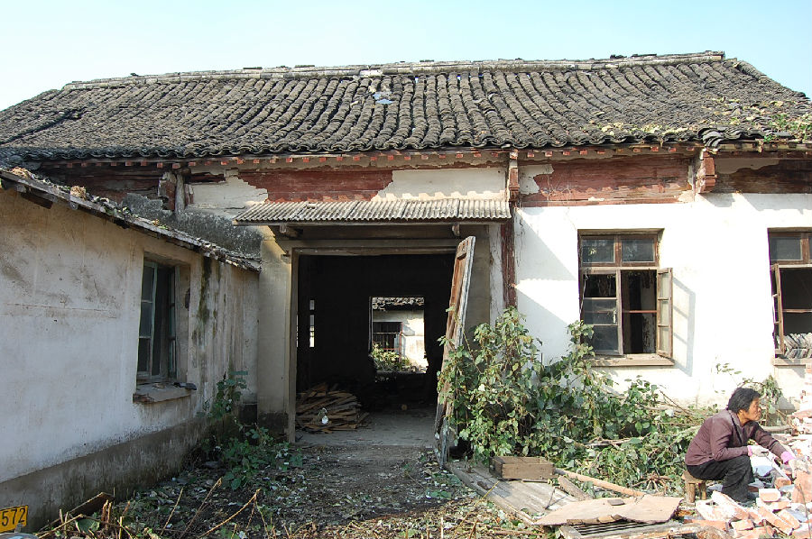

嘉兴市文物保护网 · 市级文物保护点 · 2020-11-03 · 原文

新塍镇关帝庙位于嘉兴市秀洲区新塍镇丰乐街北侧，胜利桥东侧。据《新塍镇志》记载：“前清时期就建有禅院，即关帝庙前身。顺治六年（1649）重修。雍正十年（1732）改建大殿三间，戏台一座，龙王堂、财神堂及第四进。乾隆三十年（1766）募造第三进神宫，咸丰庚申年（1860）毁，惟存大殿。光绪二年（1876）重建山门、戏台，五年（1879）重建行宫，十三年（1887）重建贯日堂。宣统元年（1909）重修大殿，供奉关公神像。民国28年（1939）戏台被日机炸毁。1949年解放后，关帝庙为粮管所改作粮仓。”关帝庙坐北朝南，占地面积432平方米，通面阔15米，通进深28.81米。共两殿，硬山顶，屋顶铺设望砖。前殿有五开间，抬梁和穿枋式并用，五檩，前后各单步，方形斗拱，明间用料较大，次间用料较小，顶高6.65米。后殿为四开间二层楼房，抬梁和穿枋式并用，五檩，前后各双步，顶高7.236米。前殿西侧墙壁内嵌有两块清顺治六年时期的石碑，后殿西侧墙内也嵌有石碑一块。关帝庙年代久远，曾每年逢时过节，镇民前往观瞻拜祭，香火甚旺。现庙主题建筑保存较为完整，对研究民间宗教信仰提供了实物资料，作为乡土庙宇建筑具有一定的历史价值。2009年公布为嘉兴市文物保护点。